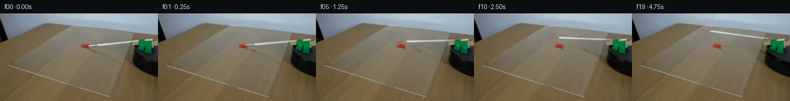

![首帧]()

Round 00
2026-11-05T14:30:28.735690+00:00像素候选变化代码 +227/−0inspection 更新
pixels b8b074b62cd77dba · code 08fc88c0f09464ff
查看本轮 generate.py 真实 diff
--- previous/generate.py
+++ current/generate.py
@@ -0,0 +1,227 @@
+"""Local deterministic pixel continuation; no external models or render engines."""
+from pathlib import Path
+import json
+import numpy as np
+from PIL import Image, ImageDraw, ImageFont
+from scipy.ndimage import map_coordinates, binary_dilation, gaussian_filter
+from scipy.sparse import lil_matrix
+from scipy.sparse.linalg import spsolve
+from artifact_io import save
+
+ROOT = Path(__file__).resolve().parent
+W, H, N, SS = 256, 144, 20, 3
+SOURCE = np.array(Image.open(ROOT / 'first_frame.png').convert('RGB'))
+ORIGINAL = SOURCE.astype(np.float64)
+Y, X = np.mgrid[:H, :W]
+PIVOT = np.array([236., 44.])
+PLANE = np.array([[1., .68], [0., .43]])
+INV_PLANE = np.linalg.inv(PLANE)
+ANGLES = np.linspace(0., .60, N)
+
+
+def polygon_mask(points):
+ mask = Image.new('L', (W, H))
+ ImageDraw.Draw(mask).polygon(points, fill=255)
+ return np.array(mask) > 0
+
+
+# Masks inferred locally from pixel measurements, never from external input.
+brush_mask = polygon_mask([(142, 52), (155, 50), (164, 48), (185, 46),
+ (204, 44), (224, 43), (225, 45), (211, 48),
+ (191, 51), (170, 54), (155, 55), (143, 54)])
+red_source = ((ORIGINAL[:, :, 0] > ORIGINAL[:, :, 1] * 1.4)
+ & (ORIGINAL[:, :, 0] > ORIGINAL[:, :, 2] * 1.4)
+ & (X > 125) & (X < 149) & (Y > 47) & (Y < 60))
+green_fixed = ((ORIGINAL[:, :, 1] > ORIGINAL[:, :, 0] * 1.3)
+ & (ORIGINAL[:, :, 1] > ORIGINAL[:, :, 2] * 1.4)
+ & (X > 220) & (Y > 42) & (Y < 67))
+brush_mask &= ~red_source & ~green_fixed
+shadow_mask = polygon_mask([(144, 55), (154, 59), (173, 68), (194, 78),
+ (194, 84), (172, 74), (153, 65), (144, 60)])
+shadow_mask &= ~brush_mask & ~red_source
+remove_mask = brush_mask | shadow_mask
+
+
+def harmonic_background(image, mask):
+ """Poisson-free harmonic interpolation from measured local boundary RGB."""
+ ys, xs = np.where(mask)
+ lut = np.full((H, W), -1, dtype=int)
+ lut[ys, xs] = np.arange(len(ys))
+ matrix = lil_matrix((len(ys), len(ys)), dtype=np.float64)
+ rhs = np.zeros((len(ys), 3), dtype=np.float64)
+ for row, (yy, xx) in enumerate(zip(ys, xs)):
+ matrix[row, row] = 4.
+ for dy, dx in ((0, 1), (0, -1), (1, 0), (-1, 0)):
+ ny, nx = yy + dy, xx + dx
+ col = lut[ny, nx]
+ if col < 0:
+ rhs[row] += image[ny, nx]
+ else:
+ matrix[row, col] = -1.
+ out = image.copy()
+ out[ys, xs] = spsolve(matrix.tocsr(), rhs)
+ # Small source wood grain sampled from nearby undisturbed surface.
+ grain = image - gaussian_filter(image, sigma=(1.2, 1.2, 0))
+ moved_grain = np.roll(grain, 7, axis=0)
+ out[ys, xs] += np.clip(moved_grain[ys, xs], -3., 3.) * .35
+ return out
+
+
+BASE = harmonic_background(ORIGINAL, remove_mask)
+brush_delta = (ORIGINAL - BASE) * brush_mask[..., None]
+shadow_delta = (ORIGINAL - BASE) * shadow_mask[..., None]
+# Only dark source shadow is transported; incidental wood highlights stay in place.
+shadow_delta = np.minimum(shadow_delta, 0.)
+# Fold all stationary scene structure into the clean background.
+BASE[shadow_mask] = ORIGINAL[shadow_mask] - shadow_delta[shadow_mask]
+
+# Supersampled inverse mapping smooths the transported photographic texture.
+HY, HX = np.mgrid[:H * SS, :W * SS]
+HX = (HX + .5) / SS - .5
+HY = (HY + .5) / SS - .5
+GRID = np.stack((HX, HY), axis=-1)
+
+
+def rotation(angle):
+ c, s = np.cos(angle), np.sin(angle)
+ # Positive angle is clockwise with the image/table-plane y axis downward.
… diff truncated; 140 more lines …